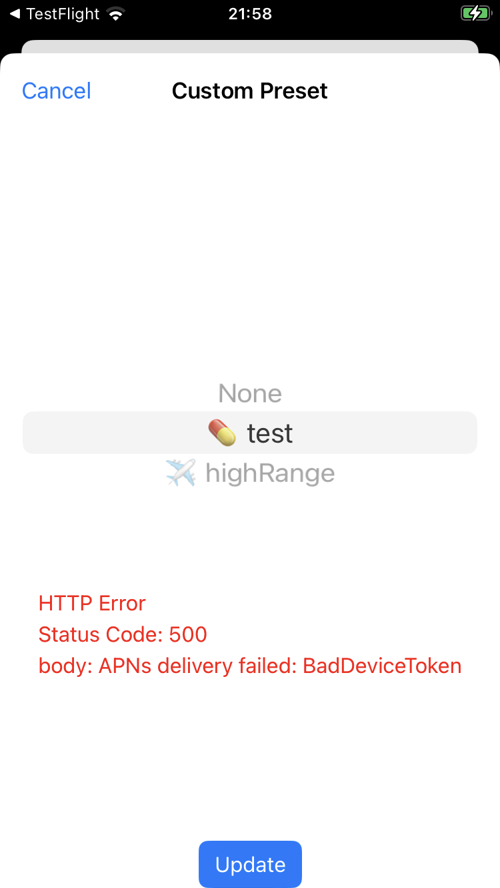

Remote Errors
Loop data is not showing in Nightscout¶
- This is a Loop and/or Nightscout issue, not related to remote configuration
- Review the LoopDocs: Nightscout with Loop page
- Check out links on the LoopDocs: Nightscout Troubleshooting page
- Make sure Looper's phone is connected to the internet so it can upload to Nightscout
Remote Commands Stopped Working¶
This section is for people who were using remote commands and they suddenly stopped working.
If you are using LoopCaregiver, try the remote command directly from Nightscout to see if they work there. If they are not working there as well, check out your account status first before attempting the fixes on the rest of this page.
- Your Apple Developer account must be in good standing for the push notifications to work
- Log in to your Apple Developer account and see if there are agreements you need to accept
Improper Configuration¶
Nightscout Config and Loop Build Method¶
Ensure your Nightscout version is at least version 14.2.6.
Verify that you performed all the Remote Configuration steps for the Nightscout site including sending an override from the Loop phone to Nightscout.
BadDeviceToken¶
When the Nightscout config var LOOP_PUSH_SERVER_ENVIRONMENT does not match the Loop app build method; the error message contains the phrase APNs delivery failed: BadDeviceToken.
- If Loop was installed remotely (typically from TestFlight following GitHub Browser Build), you must have Nightscout config var
LOOP_PUSH_SERVER_ENVIRONMENTset toproduction - If Loop was built using Mac, you cannot have
LOOP_PUSH_SERVER_ENVIRONMENTas one of your Nightscout config vars
If you attempt to issue a command from Nightscout Careportal; after you hit submit and then OK, you will see the error message:
Error: APNs delivery failed: BadDeviceToken
If you attempt to issue a command using Loop Caregiver ; after you authenticate the command, you will see the error message listed below and shown in the screenshot.
HTTP Error
Status Code: 500
body: APNs delivery failed: BadDeviceToken

Loop REMOTE_OVERRIDES_DISABLED¶
You can build Loop with Build-Time Features as part of code customization.
If you added this Build-Time Flag: REMOTE_OVERRIDES_DISABLED
You will not see any errors, but nothing will happen when you issue any kind of remote command.
Solution: Remove REMOTE_OVERRIDES_DISABLED from LoopConfigOverride.xcconfig file and rebuild the Loop app.
Incorrect Password (OTP) Error¶
The references to Caregiver below is the person sending the commands. There are specific Loop Caregiver app insructions that you modify for your authenticator. You must have the Loop phone with you to troubleshoot this problem.
- The Apple clock should be set to automatic on both the Looper's phone and Caregivers device.
- If the clock is incorrect, even slightly, remote commands will fail.
- Check if One-Time Passwords (OTP) align between Caregiver and Loop.
- In Loop: Settings -> Services -> Nightscout
- In Loop Caregiver : Settings -> Tap on Loopers Name
- Observe the 6-digit OTP as they change
- If the OTP don't match, you can reset it:
- Warning: If there are multiple devices (or people) sending remote commands, this procedure resets the OTP for all
- Loop: Settings -> Services -> Nightscout -> One-Time Password -> Tap Reload button
- The QR code is different as soon as you hit
Reload
- The QR code is different as soon as you hit
- Loop Caregiver: Delete the Looper's profile from Loop Caregiver and add the Looper again by scanning their new QR code
- Authenticators for every device used to send remote commands must be updated
- Delete the OTP configuration
- Add the new QR code
Undelivered or Expired Commands¶
Apple Push Notifications will often not make it to an app, either due to your settings or intentional limitations by Apple. This error can appear in various forms:
- Push notification banner never shows on Loopers device.
- Push notification banner shows but nothing happens in Loop (no error or success message afterwards)
- Error message shows that Password (OTP) is expired
While Loop does not have control over Push Notification timely delivery, there are things that can be done to mitigate these issues. Note that rebuilding Loop, Loop Caregiver or Nightscout is generally not going to help.
Check these settings on the Loopers device, not the Caregivers. Several of these are related to Apple suppressing notifications.
- Notifications
- Settings -> Notifications -> Loop
- Turn on Allow Notifications
- Turn on Time Sensitive Notifications
- Focus Modes
- For all focus modes (ex: Do Not Disturb, Sleep), make sure Loop is listed as an app allowing Notifications.
- To Adjust
- Settings -> Focus
- Select the focus mode (ex: Do Not Disturb, Sleep)
- Under Allow Notifications, tap Apps
- Add Loop to the list.
- Turn on Time Sensitive Notifications.
- Background App Refresh
- Settings -> General -> Background App Refresh
- Select On up top
- Activate Loop toggle in list
- Lower Power Mode
- Turn off if able
Some other things to try on the Loopers phone:
- Reboot phone
- This sometimes resets Apples push notification limit.
- Try wifi instead of cellular, if able
- Apple may not deliver notifications on cellular as often as wifi.
- Charge the phone
- If the battery is low, iOS may not deliver notifications to save battery life.
- Limit the number of Loop commands you send in a short period. Apple may throttle notifications if too many are received. (i.e. no more than 1 or 2 per hour may help).
- Consider disabling spammy notifications from other apps. This is only a theory, but it is possible that other apps can cause the system to throttle all notifications, including Loop.
- Wait 24 hours or so as it often just takes time for the push notification limits to reset.
- iOS 15.3.x: Note there are reports of Remote notifications not being received to the Loopers device for iOS version 15.3 and 15.3.1. This is fixed in iOS version 15.4.
How to Ask for Help¶
This is helpful information to share when requested by helpers. If you are not using Loop Caregiver, review the response seen on the Nightscout site.
- Activate an override from within Loop . Does Nightscout show the active override?
- Activate an override from Nightscout . Does it change the active override in Loop?
- Do errors show in Loop Caregiver or Nightscout Careportal when you send a remote command?
- Share screenshots of error if any
- Do errors show in iOS Notifications on the Loopers device?
- Check their Notification history in iOS by swiping down
- Share screenshots of errors if any
- What Loop version are you using? Released (main) or development (dev)? Approximately when did you update last?
- The minimum version that support remote bolus and carbs is Loop 3
- What iOS version is being used on the Loopers device?
- Note that iOS 15.3.x had notification issues
- Update to a newer version
- How did you build Loop?
- Build with Xcode to device (typical)?
- Using AppCenter or Diawai? A special environment variable must be set LOOP_PUSH_SERVER_ENVIRONMENT=production
Mention which troubleshooting steps you have completed so we know whether to ask about these again.
Other Errors¶
Once you've set up remote commands, you may encounter errors when trying to run them via Nightscout or iOS Shortcuts. Below are the most common and typical solutions.
Error: Loop notification failed: Could not find deviceToken in loopSettingsYou might see this in either Nightscout or Shortcuts. The error is most commonly caused by Loop not pointing to the right Nightscout instance or you haven't yet run an override locally (with the Loop app) before trying to run one remotely.
Solution: Confirm the Loop app is pointing to the right Nightscout site (and there are no extra spaces or a slash (/) at the end, and always run an override for a few seconds in the Loop app before you try to run one remotely.Error: cannot POST/api/v2/notifications/loopYou might see this in iOS Shortcuts. This means Nightscout is not updated correctly and you are running a version of Nightscout that doesn't yet support remote overrides.
Solution: Follow the Remote Configuration documentation.Error: {status:401,message:Unauthorized,description:Invalid\\/Missing}You might see this in iOS Shortcuts. This is caused by having an incorrectAPI_SECRETin the shortcut.
Solution: Double check theAPI_SECRETis correct and that there are no spaces at the end.Error: APNs delivery failed: InvalidProviderTokenYou might see this in either Nightscout or Shortcuts. This is caused because yourLOOP_APNS_KEY_IDandLOOP_DEVELOPER_TEAM_IDare swapped in Heroku.
Solution: Double check what's listed in your Apple Developer Account and compare it to the config variables in Heroku. YourTeam_IDis next to your name in the top right corner. The other code is yourKey_ID. Get the IDs in the correct location in Heroku to resolve the error.